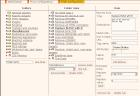

WebCleaner - a filtering HTTP proxy
The latest version of this document is available at http://webcleaner.sourceforge.net/.
Features
- remove unwanted HTML (adverts, flash, etc.)
- popup blocker
- disable animated GIFs
- filter images by size, remove banner adverts
- compress documents on-the-fly (with gzip)
- reduce images to low-bandwidth JPEGs
- remove/add/modify arbitrary HTTP headers
- configurable over web interface
- usage of SquidGuard blacklists
- antivirus filter module
- detection and correction of known HTML security flaws
- Basic, Digest and (untested) NTLM proxy authentication support
- per-host access control
- HTTP/1.1 support (persistent connections, pipelining)
- HTTPS support (both forwarding and filtering)
WebCleaner is featured in the Linux Magazine Issue 43. The article is downloadable as PDF.
Download
WebCleaner is OpenSource software and licensed under the GPL. Downloads are available for Windows and Unix systems from the WebCleaner download section.
Software requirements and installation instructions are located at the install documentation. To see what has changed between releases (and what will be in the next release), look at the ChangeLog.
I also suggest using the SwitchProxy Mozilla/Firefox extension. It allows easy switching between different proxy settings.
Screenshots
 Proxy configuration Filter configuration
{kind=link}
{kind=link}
Why should I use WebCleaner?
The first feature that sets WebCleaner apart from other proxies is exact HTML filtering, and this removes a lot of advertisings. The filter does not just replace some strings, the proxy parses all HTML data. The parser is fast (written in C) and can cope with every broken HTML page out there; if the parser does not recognize HTML structures, it just passes the data over to the proxy until it recognizes a tag again. No valid HTML data is ever discarded or dropped.
Another feature is the JavaScript filtering: JavaScript data is executed in the integrated Spidermonkey JavaScript engine which is also used by the Mozilla browser suite. This eliminates all JavaScript obfuscation, popups, and document.write() stuff, but the other JavaScript functions still work as usual.
Exact HTML filtering has another good side-effect: it is possible to detect and prevent known security flaws in HTML processors. Several known (but not all) buffer overflow exploits or Denial of Service attacks are detected and fixed by the HtmlSecurity class.
If you find an HTML exploit that is not covered by the security filter, please let me know.
Furthermore, WebCleaner can filter SSL traffic used in https:// URLs. See the SSL gateway documentation for more info.
Configuration
Assuming your proxy runs on port 8080, point your browser to http://localhost:8080/ to configure the proxy. The underlying configuration format is a custom XML format. It is specified by the files filter.dtd and webcleaner.dtd.
Running
Please note that the web configuration interface needs write permissions in the configuration directory.
Running under Unix/Linux
The proxy is supervised and automatically (re-)started from the runit package. See the runit homepage for more information.
Running under Windows
The proxy is a normal NT service and can be started/stopped from the "Administrative Tasks" entry in the system configuration.
Setting access permissions
To allow using your proxy from other hosts than the one it is running on, you have to edit the allowed host list in the configuration interface.
For example to allow access from your local LAN network at 192.168.1.* you would add 192.168.1.1/8 to the allowed host list.
If you do allow access from other hosts than your own, please do not remove the password protection. Otherwise you will be running an open proxy which is a security risk.
Bug reports and mailing list
For help and bug reports you can join the webcleaner-users@lists.sourceforge.net mailing list at the subscription page or read the list archives.